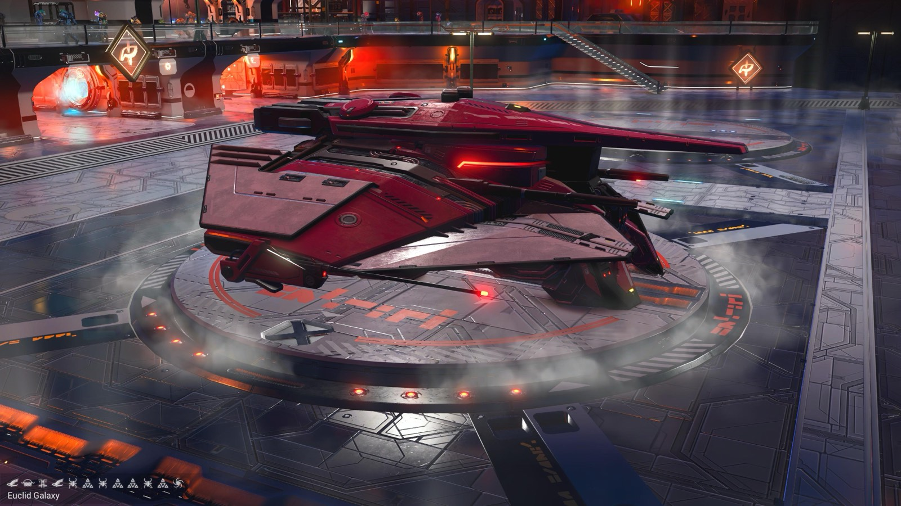
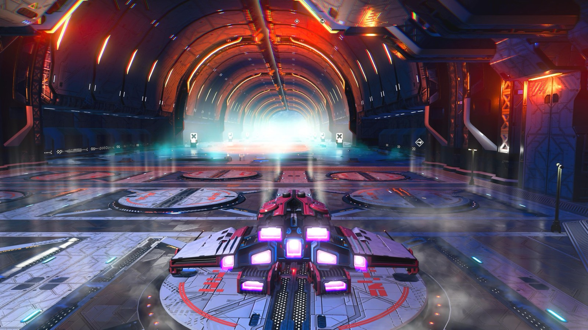
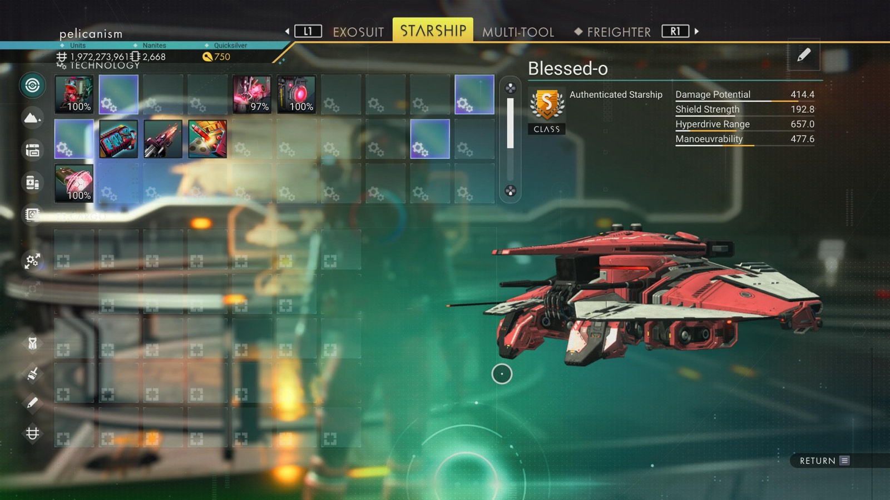

Waypoint 1
Rikalha-Ryuga



- Portal glyphs
- ?0217F7FF7F9
- Unknown · Sunset · Face · Bird · Bug · Atlas · Bug · Atlas · Atlas · Bug · Atlas · Galaxy
- First glyph (the planet) is unknown: no ground shot at this stop.
- Distance from core
- 1,157,445 LY
- S-class ship
- Blessed-ο
- Damage
- 414.4
- Shield
- 192.8
- Hyperdrive
- 657.0
- Manoeuvrability
- 477.6